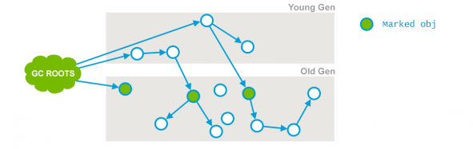
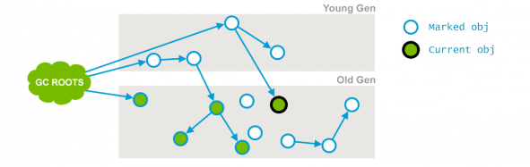
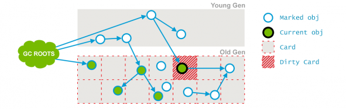
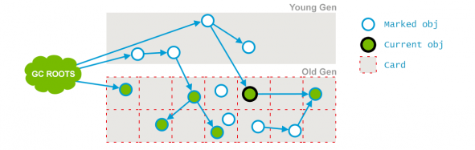
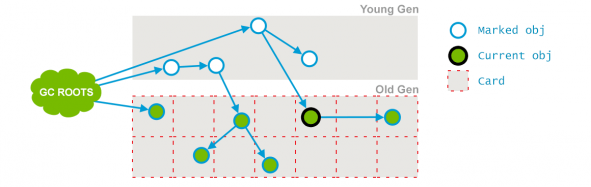

并发标记清除垃圾收集器(简称CMS) , 是一款为低延迟而设计的垃圾收集器 , 在应用进程工作的时候利用机器多处理器资源在后台进行垃圾收集动作. 特别适用于有比较多的长期存活对象 , 且机器的处理器大于2.可以使用 -XX:+UseConcMarkSweepGC命令行选项来启用 .
CMS已经不推荐使用 , 业界推荐使用G1来替代它 . 虽然如此很多老的应用依旧运行着此垃圾收集器.
CMS的工作原理
与其他垃圾收集器类似 ， CMS垃圾收集器也是一个分代垃圾收集器。它分为 minor gc 和 major gc。CMS垃圾收集器为了减少应用程序的停顿时间 ， 在major gc的时候垃圾回收线程与应用程序线程是 并发执行的。
minor gc 可以与 major gc交替进行， 它跟parallel 收集器工作方式类似，直接停顿应用程序线程。
major gc 比较复杂 。每一个major gc周期，应用程序将会有两次停顿， 一次是开始的时候，一次在垃圾回收周期的中间。第二次停顿会比第一次的时间长，停顿的时候垃圾回收线程是多个线程进行工作的。其他阶段则由1个或者多个垃圾回收线程并发进行处理。
过程分为以下阶段
初始标记（Initial Mark）
这是CMS垃圾回收周期其中一个停顿应用程序的阶段 ，这个阶段主要是从GC Roots遍历可直达的老年代对象和遍历被新生代存活对象所引用的老年代对象。这个过程相较于重新标记的停顿时间比较短。

并发标记（Concurrent Mark）
它的主要工作是通过遍历初始标记阶段标记出来的存活对象，递归遍历老年代，并标记可直接或间接到达的所有老年代存活对象。此阶段GC线程和应用程序线程并发工作，因此在标记的过程中可能有些对象的引用已经发生了改变，如新生代的对象已经晋升到老年代、直接在老年代分配对象、老年代的对象应用失效等。对于这些对象，需要重新标记以防止被遗漏。为了提高重新标记的效率，本阶段会把这些发生变化的对象所在的Card标识为Dirty，这样后续就只需要扫描这些Dirty Card的对象，从而避免扫描整个老年代。

如上图，“Current obj”原来直接或间接可达对象有3个，引用关系发生改变，后面的3个对象变为不可达。
并发预清理（Concurrent Preclean）
此阶段的主要工作是会重新扫描前一个阶段标记的Dirty对象，并标记被Dirty对象直接或间接引用的对象，然后清除Card标识。

如上图”Current Obj“在上一个阶段标记完以后，引用的对象发生了该表 。那么被标记为Dirty Card。将在本阶段进行重新标记并清除Dirty Card的标记。标记完成如下图所示。

可中止的并发预清理（Concurrent Abortable Preclean）
主要工作是尽可能承担更多的并发预处理工作，从而减轻在重新标记（下一个阶段）的停顿时间。主要通过处理 From 和 To 区的对象，标记可达的老年代对象 和 扫描处理Dirty Card中的对象。
具体执行多久，取决于许多因素，满足其中一个条件将会中止运行：
- 执行循环次数达到了阈值；
- 执行时间达到了阈值；
- 新生代Eden区的内存使用率达到了阈值。
重新标记（Remark）
这是CMS垃圾回收周期另外一个停顿应用程序的阶段。前面的并发阶段并不一定是所有存活对象都会被标记。因此需要一个停顿应用程序的阶段来完成最后的标记工作。它的主要目的是来标记前面阶段已经变化的对象。
并发清理Concurrent Sweep）
主要工作是移除所有未使用的对象，并回收器占用的空间。回收后的对象引用图如下 ， 可对比并发预清理阶段的对象引用图。

并发重置（Concurrent Reset）
清理并恢复在CMS GC过程中的各种状态，重新初始化CMS相关数据结构，为下一个垃圾收集周期做好准备。
并发阶段有一个或者多个垃圾收集线程占用处理器资源。虽然应用程序没有停顿但是吞吐量会有一定的降低。在重新标记之后并发清理阶段会对不可达的对象进行清理。在垃圾回收周期结束之后，CMS垃圾收集器进入等待阶段，几乎不消耗处理器资源。直到下一个垃圾回收周期开始。
这里是一个完整的CMS老年代垃圾回收周期日志
2019-06-19T20:00:35.883+0800: 13180.592: [GC [1 CMS-initial-mark: 767820K(1048576K)] 933451K(3879744K), 0.1057880 secs] [Times: user=0.11 sys=0.00, real=0.11 secs]
2019-06-19T20:00:35.989+0800: 13180.698: [CMS-concurrent-mark-start]
2019-06-19T20:00:36.089+0800: 13180.797: [CMS-concurrent-mark: 0.099/0.100 secs] [Times: user=0.62 sys=0.00, real=0.10 secs]
2019-06-19T20:00:36.089+0800: 13180.798: [CMS-concurrent-preclean-start]
2019-06-19T20:00:36.092+0800: 13180.800: [CMS-concurrent-preclean: 0.003/0.003 secs] [Times: user=0.00 sys=0.00, real=0.00 secs]
2019-06-19T20:00:36.092+0800: 13180.800: [CMS-concurrent-abortable-preclean-start]
CMS: abort preclean due to time 2019-06-19T20:00:41.309+0800: 13186.017: [CMS-concurrent-abortable-preclean: 5.117/5.217 secs] [Times: user=6.25 sys=0.13, real=5.22 secs]
2019-06-19T20:00:41.309+0800: 13186.018: [GC[YG occupancy: 589986 K (2831168 K)]2019-06-19T20:00:41.310+0800: 13186.018: [Rescan (parallel) , 0.2814280 secs]2019-06-19T20:00:41.591+0800: 13186.300: [weak refs processing, 0.0002360 secs]2019-06-19T20:00:41.591+0800: 13186.300: [scrub string table, 0.0009200 secs] [1 CMS-remark: 767820K(1048576K)] 1357806K(3879744K), 0.2828330 secs] [Times: user=6.10 sys=0.01, real=0.28 secs]
2019-06-19T20:00:41.593+0800: 13186.301: [CMS-concurrent-sweep-start]
2019-06-19T20:00:42.421+0800: 13187.130: [CMS-concurrent-sweep: 0.828/0.829 secs] [Times: user=0.84 sys=0.00, real=0.83 secs]
2019-06-19T20:00:42.421+0800: 13187.130: [CMS-concurrent-reset-start]
2019-06-19T20:00:42.425+0800: 13187.134: [CMS-concurrent-reset: 0.004/0.004 secs] [Times: user=0.00 sys=0.00, real=0.00 secs]
并发模式失效
正常情况下它在应用线程正常运行的同时做了大部分的垃圾标记和清除,因此应用线程只有短暂的一些暂停。但是如果它在老年代被填满之前无法完成回收不可达对象的操作 或者无法满足老年代的空闲空间分配,那么它将所有应用线程停顿 ， 来进行垃圾收集。
无法并发完成老年代的垃圾收集 称为并发模式失效 ， 表示着需要调整CMS收集器的参数。
除此之外 ，并发模式还能被显示的GC如 System.gc()或者JVM相关的工具打断。
垃圾收集时间和OutOfMemoryError
如果耗费过多的时间在GC 上面 ， CMS收集器将抛出一个异常 OutOfMemoryError ：应用花了98%的时间在垃圾收集却只却只能清理出2%的空间 , 那么这时候OutOfMemoryError 就会被抛出来。
这个特性是为了防止因为堆空间太小，导致应用程序长时间运行，却花费很多的时间在GC上，而没有真正执行应用程序的内容。如果需要，可以使用-XX:-UseGCOverheadLimit这个命令行选项来进行关闭。
这个策略跟并行垃圾收集器类似，限制并发垃圾收集的时间没有超过整体时间的98%。换句话说，只有在应用程序停顿来进行GC才会开始计算时间。 这种情况通常是由于并发模式失败或显式收集请求。
启动垃圾回收周期
使用Serial垃圾收集器的时候 ，只要老年代被填满则应用程序停顿直到垃圾收集完成。相反，CMS必须定时启动垃圾回收周期，以便在老年代被填满之前完成它。否则 应用程序将因为并发模式失效而陷入比较长时间的停顿。在以下几种情况下会启动并发垃圾收集。
- 根据最近的垃圾收集情况 ， 估算老年代被填满之前能完成一次垃圾回收周期的时间。通常这个估算的时间会比较宽裕，因为一旦进入并发失效模式，代价是比较昂贵的。
- 老年代的空间占用率超过的整体一个百分比的时候也会启动垃圾回收周期。这个比例的默认值是92%，可以使用命令行选项
-XX:CMSInitiatingOccupancyFraction=<N>进行调整。<N>的取值是 0-100之间的整数， 表示老年代的占用率是0-100。
参考
https://plumbr.io/handbook/garbage-collection-algorithms-implementations
https://www.oracle.com/technetwork/tutorials/tutorials-1876574.html
https://docs.oracle.com/en/java/javase/11/gctuning/index.html